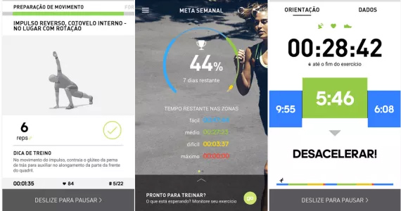
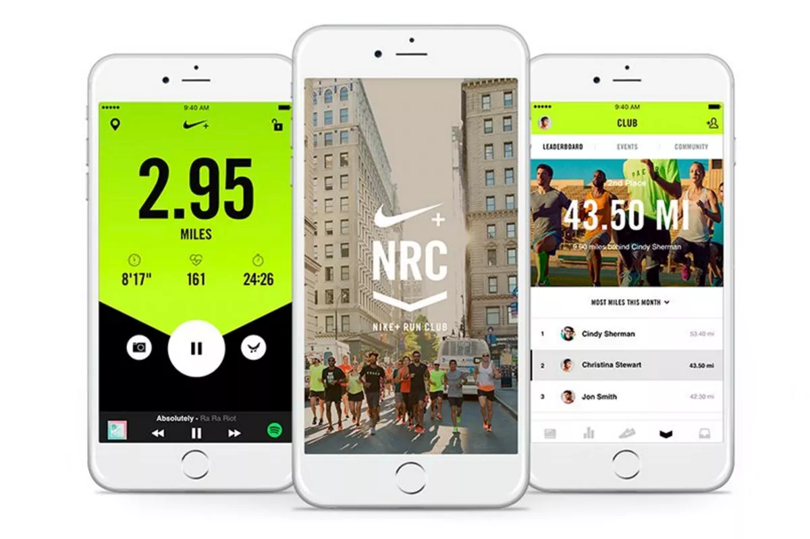
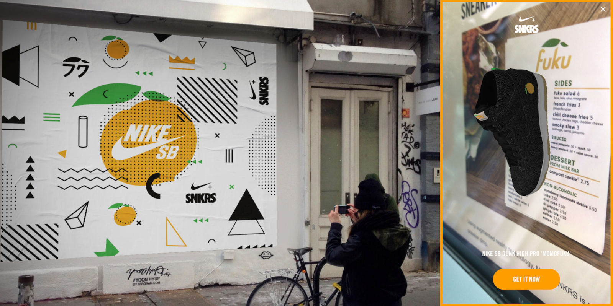

Setembro 21, 2017
Como a Nike e a Adidas usaram mobile apps para estreitar o relacionamento com seus clientes
As duas maiores empresas de sportwear do mundo apostaram suas fichas no desenvolvimento de apps
As duas maiores empresas de sportwear do mundo apostaram suas fichas no desenvolvimento de aplicativos móveis buscando estabelecer um relacionamento mais próximo de seus clientes. Criaram um canal de marketing direto, aumentando a visibilidade da marca e o engajamento através de iniciativas inovadoras e o uso criativo das tecnologias móveis como GPS, Bluetooth e AR (Realidade Aumentada).
Veremos a seguir 3 exemplos de apps desenvolvidos pela Adidas e Nike:
1. Adidas Treino e Corrida
O Aplicativo Adidas Treino e Corrida ajuda o usuário em seus treinos de corrida, incluindo centenas de planos de treino gratuitos criados pelos treinadores de elite da Adidas, ajudando na perda de peso, fortalecimento da musculatura e o aumento da flexibilidade.
O App usa o GPS para monitorar o trajeto, ritmo e distância em ambientes externos. Ele conecta um monitor de frequência cardíaca compatível com Bluetooth Smart para precisão no feedback de cárdio.
2. Nik+ Run Club
O Nik+ Run Club segue na mesma linha do Adidas Treino e Corrida. Ele é um app com foco na corrida e acompanha os usuários em seus treinos, ajudando no cumprimento de suas metas. O app é capaz de mostrar diferentes parâmetros do exercício físico feito. Um diferencial é a possibilidade de monitorar não só exercícios em parques ou na rua, mas também na esteira da academia ou em casa.
A integração às redes sociais Facebook, Twitter e Path, possibilita receber incentivos dos amigos em tempo real. Além disso o usuário se cadastra no site e traça metas sempre que quiser se superar, ou seja, o Nike + Running não é só mais um aplicativo para corrida, é um assistente de corrida, que acompanha e motiva o usuário.
Os dois exemplos mostrados até aqui (Adidas Treino e Corrida e Nik+ Run Club) são ótimas iniciativas das marcas em se aproximar dos clientes, possibilitando que o time de marketing e desenvolvimento de produtos tenham um canal direto de informação, sendo possível analisar os costumes, frequência da prática de exercícios e as necessidades pontuais de seus usuários, além de reforçar o alinhamento da marca com o seus clientes.
3. Nike Snkr´s App
Já o Nike SNKR’s App, é um app para vender tênis com edições limitadas. A primeira ação do App foi vender a edição limitada do tênis Nike SB Dunk High Pro "Momofuku," um modelo desenhado em colaboração com o famoso chef de cozinha de NY, David Chang.
Para desbloquear o modelo para compra no app, o usuário tinha de acessar a página do produto, tocar em um GIF e depois apontar a câmera do smartphone para um menu do restaurante Momofuku em Nova York (não sendo necessário estar fisicamente no restaurante para isso).
Logo após, um modelo 3D dos tênis aparece na tela e o usuário tem a chance de comprar um par. Além disso, há cartazes fora dos restaurantes que podem ser utilizados com o recurso AR (Realidade Aumentada) do aplicativo para o desbloqueio da compra.
No mês de maio deste ano, a empresa também apresentou o Stash, uma maneira para as pessoas desbloquearem produtos exclusivos no aplicativo SNRK’s com base na sua localização.
Com o Nike SNKR’s, a Nike buscou engajar os usuários de um nicho de mercado da empresa através de uma ferramenta desenhada exclusivamente para falar com esse público. Engajou, tanto transacionalmente, possibilitando um prêmio (a possibilidade de compra de um modelo exclusivo e limitado), mas também engajou emocionalmente, se relacionando diretamente com o cliente e empoderando este cliente durante o processo de compra.
Gostou do conteúdo visto aqui? Então saiba quais são os Cinco motivos para apostar em um app e descubra o que tem levado as empresas a investirem em aplicativos para smartphones.
Compartilhe